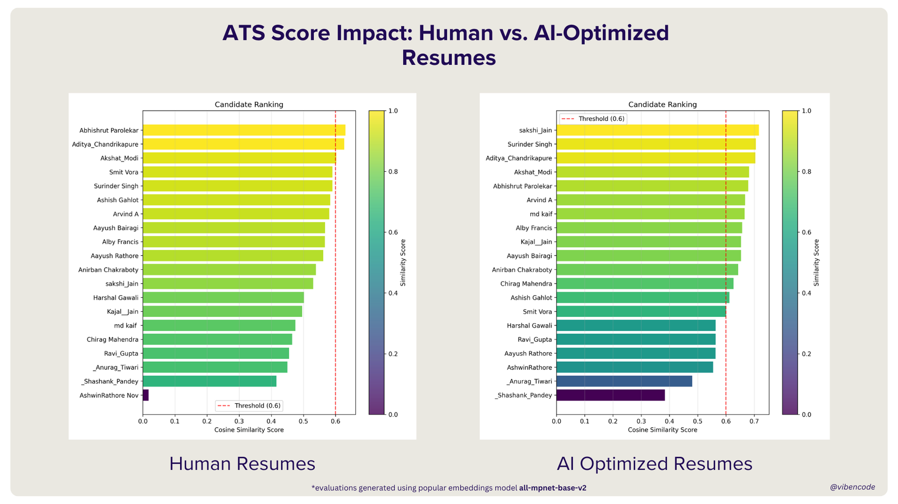
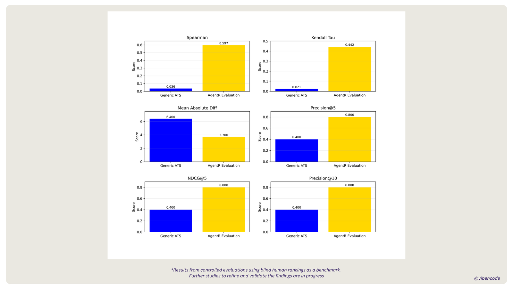

When everyone is using bots, how do you find the humans who matter?
Exploring agentic systems powered by RLHF-based AI as an answer to keyword-matching algorithms like the ATS, and how that changes the way we discover and evaluate talent.

In 1482, Leonardo da Vinci penned history’s first modern resume, a ten-point manifesto offering to build portable bridges, stealth chariots and “beautiful bronze horses”. Today, 542 years later, his application would be auto-rejected by most Fortune 500 ATS systems. The reason? No mention of “agile methodologies” or “cross-functional synergy”. Memes about recruiters asking for ten years of experience in a skill that has existed for five are not uncommon.
Something fundamental is broken in how we assess talent, and this is our attempt to fix it.
For centuries, hiring was a dialogue between potential and intuition. With the industrial boom we forgot that every resume is a human story, and then with ATS software we started a criteria-based system that assumes every good candidate follows the same trajectory.
The consequences are profound. Companies end up hiring people who are optimised for algorithms rather than innovation. The very qualities that drive breakthroughs and create competitive advantage, originality, creativity and non-standard excellence, are systematically filtered out of the talent pool.
The result is a class of people preparing to “crack” FAANG hiring, rather than building something powerful for them.
The AI optimisation paradox
Is that it? No. There is a technical fallout coming too.
With recruiters using generative AI to write job descriptions and candidates using the same tools to write AI-optimised resumes, ATS systems are already bloated with artificially identical candidates.

Traditional ATS systems operate primarily on semantic similarity, and generating a resume that parrots the job description back is a classic language-model function. That makes genuine quality distinctions nearly impossible.
We faced this first hand, and the disconnect prompted us to go back to first principles.
What human judgment sees
Imagine having just five resumes on your desk. An experienced recruiter does not scan for keywords or tick boxes. They read each one as a story, looking for the narrative arc that reveals who the candidate actually is:
- Career progression, not just job titles, but growing responsibility and impact.
- Patterns of achievement, consistent success across roles.
- Adaptability, how quickly someone masters new skills or switches domains.
- Problem-solving approach, the challenges they took on and how they navigated them.
- Career intentionality, whether the moves show purpose or are just random shifts.
This is fundamentally different from algorithmic filtering. It does not ask “does this person match our criteria?” but “what does this person’s story tell us about their potential?”
The challenge became clear. How do we scale that judgment across hundreds or thousands of applications without losing the nuance, the depth or the consistency of an experienced recruiter?
Agentic systems
The answer lies in what we call agentic systems: autonomous flows powered by RLHF-based generative models, tuned to identify career patterns and reason holistically about potential. Unlike a traditional ATS, which prioritises keyword matches, these systems analyse career trajectories, skills and outcomes to surface undervalued talent that rigid algorithms miss.
Early results are promising. Taking blind human evaluations as the benchmark, our reports consistently beat embedding-based algorithms across multiple criteria. Better still, unlike an ATS score, which is just a number, you can backtrace and verify the rationale behind why a given candidate was recommended.

The path forward
What organisations need is not just better AI. It is better intelligence about how AI gets deployed in hiring. After refining the approach internally, we are making it available as a beta release to organisations facing the same problem.
We call it AgentR. R for recruitment, reinvention and results.
For talent acquisition leaders working around the limits of conventional hiring systems, the implications go beyond efficiency. When you can reliably identify and attract talent, you gain access to the intellectual diversity that drives innovation.
In a world where everyone is using AI to game the system, the real advantage comes from using AI to transcend the system entirely, to rediscover the human stories behind the resumes and recognise talent in all its non-standard forms.
We are building that future here, because when the next Leonardo da Vinci submits his resume, we want to be sure we get back to him.
First published on insights.vibencode.com. More of the thinking behind the product is on the investors page.